Who this is for: A new HR administrator using HR Reporting for the first time. What this covers: The day-to-day tasks you'll perform — signing in, finding people, running and exporting reports, pinning positions, and the admin tasks of configuring reports and posting announcements. What this does not cover: The underlying design, data model, or SQL internals. This is a how-to document, not a design document.
The guide uses the local test environment and signs in with the admin test account (see Chapter 1). All the screens and data you see are synthetic fixture records — no real employee personal information is shown.
Goal: Access the application with your administrator credentials.
http://localhost:5173.Expected result: You land on the Home page (or whichever page you saved as your default home — see Chapter 7). The topbar on the right shows “Welcome, <first name> — <position>, <school>”.
For this guide, sign in with the admin test account: Wake ID hr.admin,
Employee ID 900003. This account has the hr_admin role, so it can see
the Report Configuration navigation entry and the admin section of the
Settings drawer.
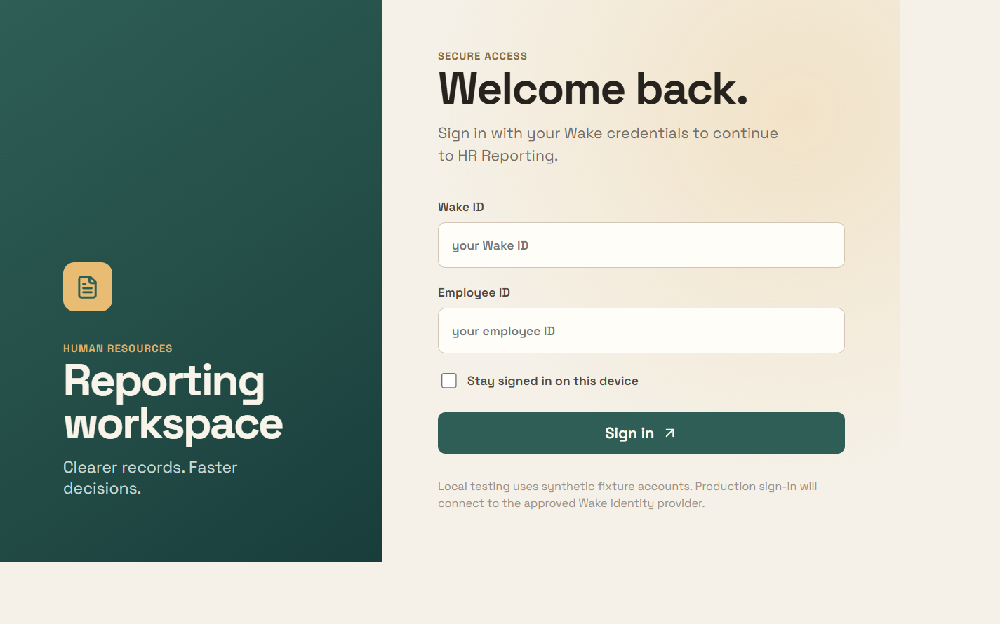
💡 If you previously checked Stay signed in, the app signs you in automatically and skips this form. Click Sign out (top-right) to clear it.
💡 Local testing uses synthetic fixture accounts. In production you'll sign in through the approved Wake identity provider instead.
Goal: Recognize the main regions of the app so you can navigate confidently.
Expected result: You can switch between Home, Reports, and Positions from the sidebar and reach your personal and admin settings from the topbar gear.
Goal: Find a person by name, employee number, or organization.
Expected result: A results table appears with Person, Organization, Position, and Employee no. columns. The recently searched counter on the left tracks the people you've opened.
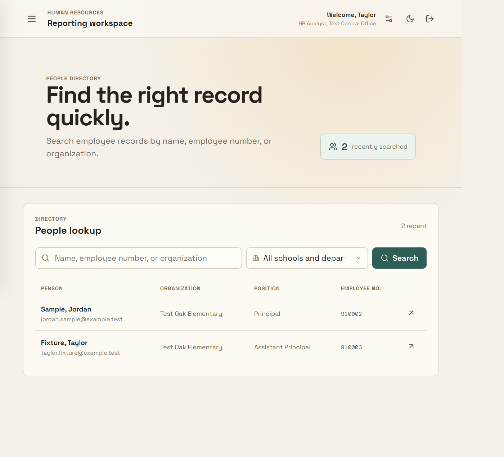
Goal: View the complete employee report for a person.
Expected result: The drawer shows the employee's name, an Active status, and the record laid out as cards. Eight sections are available — Identity, Contact, Assignment, Compensation, Contract, Licensure, Service summary, and Leave balances. Each card's header has controls to hide, move, recolor, and reorder it.
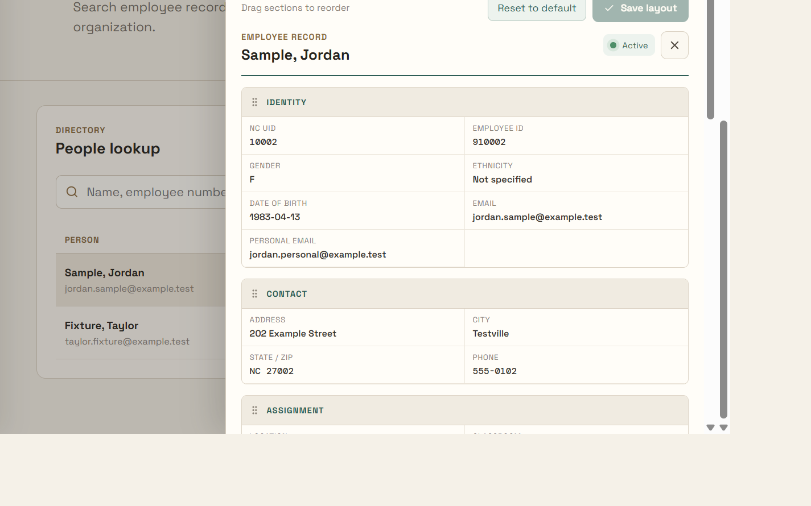
Goal: Reorder, hide/show, and recolor the record sections to suit how you work.
Expected result: Your layout is saved for your user account and reappears the next time you open an employee record.
Goal: Switch the proposed salary display between monthly and yearly figures.
Expected result: The value toggles between the monthly figure and the yearly figure (yearly = monthly × 12).
Goal: Browse the available HR reports.
Expected result: The Report center opens with the heading “Choose a report.” Reports are grouped into sections (for example, Person, Certification and evaluation, Staffing and contracts), each with an options count. The top shows a school picker and a Filter reports box, plus a Recently run strip.
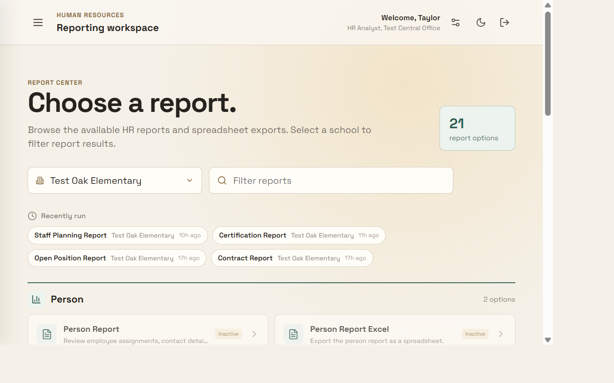
Goal: Scope report output to one school or department.
Expected result: The school is remembered for you and used as the scope for reports you run.
Goal: View report rows.
Expected result: A data table appears with an Export to Excel, Export to CSV, and Export to PDF button in the toolbar, a Filter rows box, a Columns chooser, a row count (“X of Y rows”), and sortable column headers.
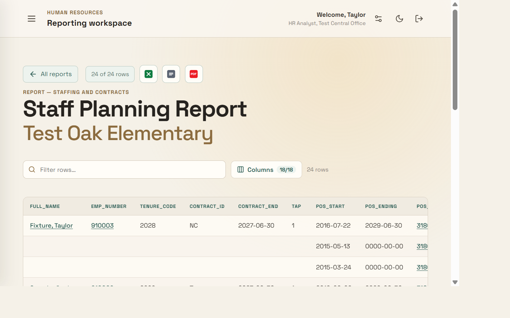
🔒 Reports marked Inactive in Report Configuration are greyed out with an “Inactive” badge and cannot be opened (see Chapter 5).
Goal: Manipulate the result grid.
Expected result: The displayed rows and the column count update immediately. Any active row filter is also applied to exports.
Goal: Narrow rows to those matching an admin-configured highlight rule.
Expected result: Only the matching rows remain, tinted with the rule's color (rules are configured in Chapter 5).
Goal: Download the current grid.
Expected result: A file downloads named
<report-title>-<school>.xlsx / .csv / .pdf.
Goal: Quickly reload a report you ran earlier.
Expected result: The report reopens with the same school selected.
Goal: Inspect a position.
Expected result: A read-only Position details drawer opens with the General tab (position number, account, organization, dates, administrator, region, and more) and a Notes tab, plus an Incumbent section with Current and Future tabs.
Goal: Keep a position on the Positions page for quick access.
Expected result: The icon becomes filled and the position appears on the Positions page. The sidebar Positions badge updates to the new count.
Goal: Find, open, or remove pinned positions.
Expected result: The pinned list updates and the count badge refreshes.
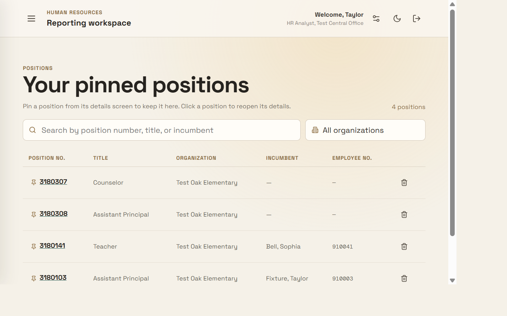
Goal: Attach a comment to a position for collaborators.
Expected result: The note appears and a badge count shows on the Notes tab.
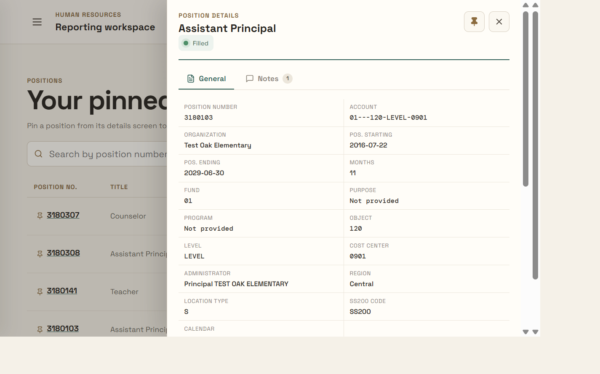
Only admins can do this. The Report Configuration navigation entry is visible only to users with the
hr_adminrole. Sign in as the admin account (hr.admin/900003) to access it.
Goal: Group reports into catalog sections.
Expected result: Sections appear on the Reports catalog. Archived sections are hidden until reactivated.
Goal: Create an admin-authored report backed by SQL.
SELECT (or WITH) statement that
must reference the :organization bind parameter.:organization).Expected result: The report appears in the catalog as active and can be run by users.
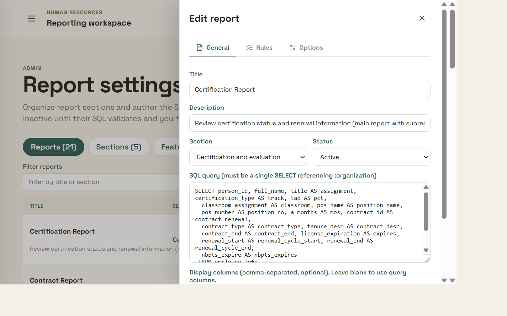
Goal: Tint matching rows automatically so important rows stand out.
equals, not equals, contains, does not contain, is empty, and
is not empty. You can use THISYEAR / NEXTYEAR for the current or next
year.Goal: Add blank output columns and/or a subreport.
SELECT that must reference
:person_id. Set a Subreport key column (defaults to person_id).
Leave the SQL blank to disable. Nested rows appear in the preview, in the
Excel Subreport sheet, and in the PDF block.Goal: Control whether a report is visible and runnable.
Expected result: Active reports open; inactive reports are greyed out with an “Inactive” badge.
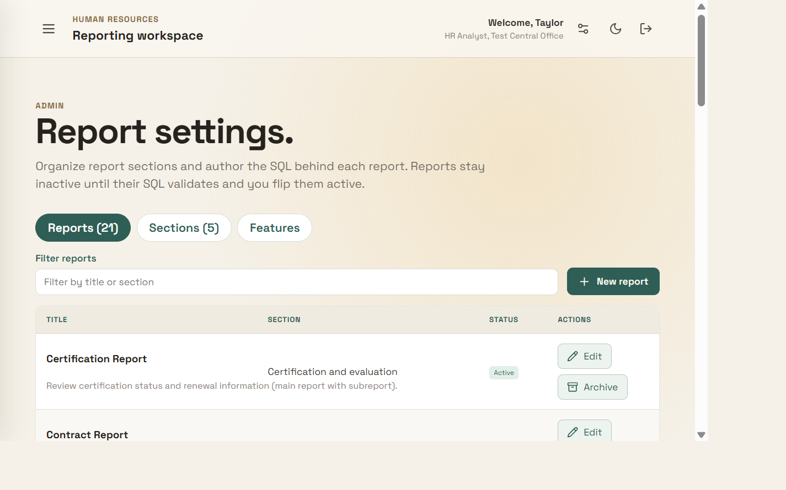
Only admins can do this. Announcements are managed under the Settings gear, not the Report Configuration page.
Goal: Show a slim, dismissible announcement strip.
Expected result: A banner appears on every page and users can dismiss it. Up to 3 active banners can be shown at once.
Goal: Show a full-screen, one-time announcement at sign-in.
Expected result: On the next sign-in, a full-screen overlay appears once; clicking Got it dismisses it.
Goal: Manage existing announcements.
Expected result: The message list reflects your changes. Active banners re-surface after an edit even if they were previously dismissed.
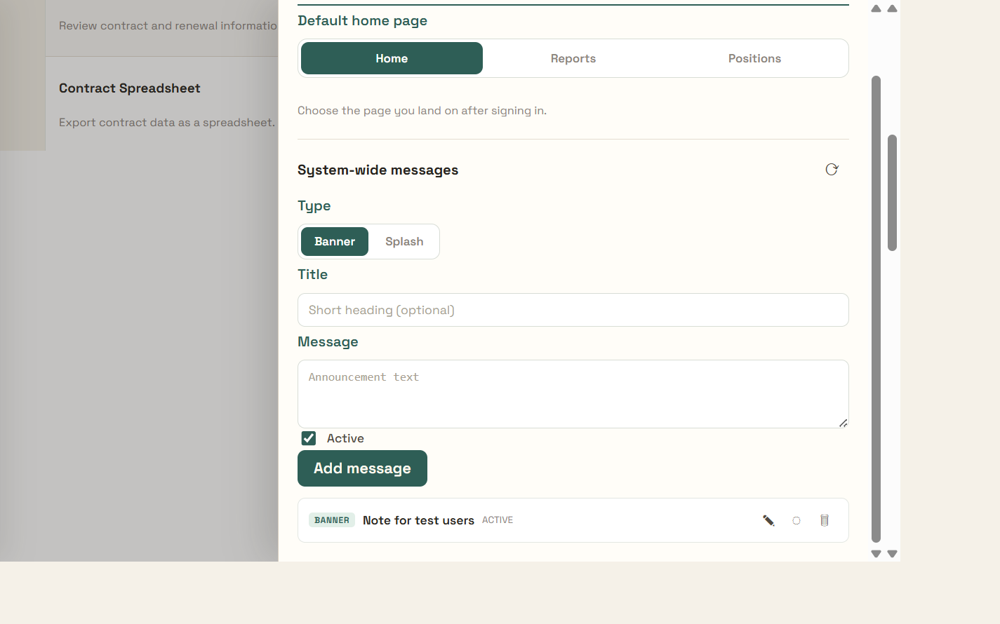
Goal: Choose where you land after signing in.
Expected result: Your next sign-in lands on the page you selected. This is saved per user.
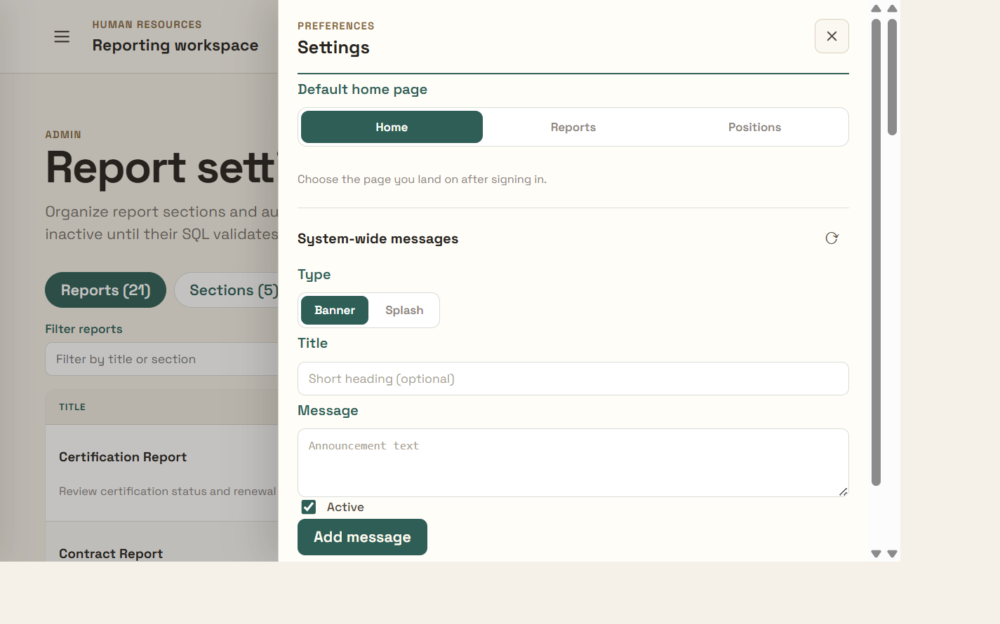
Goal: Switch the app between the light and dark theme.
Expected result: The whole app re-themes and your choice persists across sessions.
The local environment ships with synthetic fixture accounts you can use to see role-based differences. The main guide uses the admin account.
| Role | Wake ID | Employee ID | What you can see |
|---|---|---|---|
hr_admin |
hr.admin |
900003 |
Full admin — sees Report Configuration and the admin settings |
school_staff |
school.staff |
900001 |
Standard staff — no admin navigation |
principal |
principal.one |
900002 |
Restricted school access |
⚠️ Never capture real employee personal data (SSN, date of birth, contact details, salary, license numbers) in screenshots. The data shown in this guide is purely synthetic fixture data.